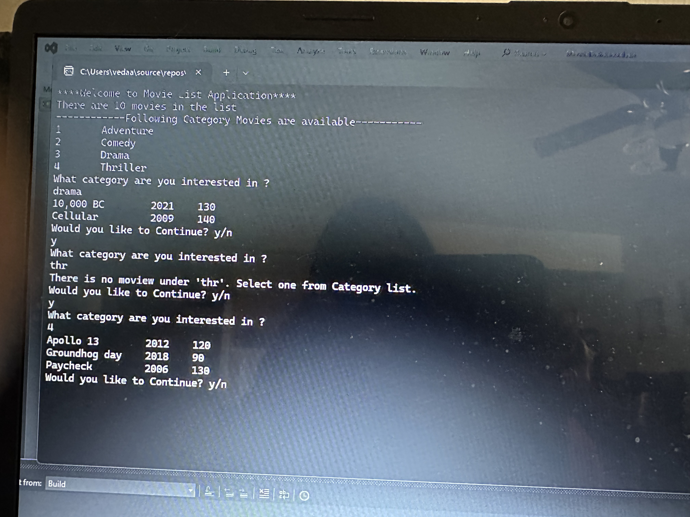

| Collaborated with grand circus peers to build a console application that allows users to choose from the list of books which is stored in books catalog (saved to a text file using file I/O). Application has many features such as search by title, search by author, checkout and return. Validator class handles all the user response validations.• Current library book list (including due dates and statuses) saved to the text file when the user quits, so that the next time program runs, it remembers. | |
| Developed Rock, paper, scissior game using C# OOPs. user has to enter one of the options, and for the opponent player, it will randomly select the option. Based on the rules given, it will track the status win or loss for each game with the opponent, when user quits it will display the status of the user, tells how many wins and loss. Gained knowledge on how to use LINQ and OOPs. | |
|  | The application stores a list of movies and displays them by category. The user can enter any of the following categories to display the films in the list that match the category: animated, drama, horror, scifi. After the list is displayed, the user is asked if he or she wants to continue. If no, the program ends. When the user enters a category, the program should read through all of the movies in the List and display a line for any movie whose category matches the category entered by the user. |
| Created a C# console application that utilizes OOP concepts. Application determines the farmers produced food is sufficient for the villagers during the winter. It will display the result by comparing the harvest amount and food consumption by the villagers. | |
| Created a shopping cart manager in Java using Classes and Objects. Application enables us to add a item in the cart. Finally it will display the cart list with items purchased inclusing price, quantity. also it will show the expensiove item details. |